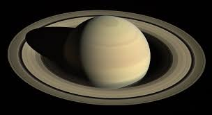

Головна
Зорі
Сонце
Планети
Про проект
Контакти
Планета Сатурн (Cологубов Павло)

Сатурн - друга за величиною планета сонячної системи.
Сатурн не має твердої поверхні.
Кільця Сатурна можна побачити навіть в простий телескоп.
Рік на Сатурні триває більше 29 земних років.